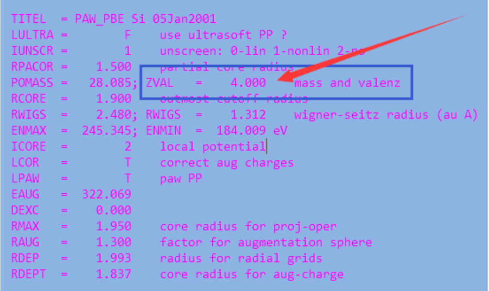

Bader电荷计算
step by step:
优化自己的体系结构
bader电荷分析的计算部分:
将前面优化完的CONTCAR 重命名为POSCAR
设置INCAR
LAECHG=.TRUE. LCHARG = .TRUE. NSW = 0 IBRION = -1 (前面有了NSW = 0, 这个也可以不设置)Kpoints可以用之前优化计算的,也可设置的稍微大些
WAVECAR,CHGCAR等有的话就读一下(在第二步加上读它们的相关参数)。没有的话就不读了,这个无关紧要,不要纠结
但是,如果你的体系很难收敛的时候,建议保留上一步的WAVECAR以便节省计算时间,如果没有的话电子步数适当增加(NELM=500)
获取VTST的脚本 ：
下载网址:http://theoryNaN.utexas.edu/vtsttools/scripts.html (用到里面的chgsum.pl这个脚本)http://theoryNaN.utexas.edu/henkelman/code/bader/downl oad/bader_lnx_64.tar.gz (下载bader处理的脚本)
将前面下载的内容解压,然后复制到~/bin 文件夹中
如果后面运行的时候遇到权限问题:执行:
chmod u+x ~/bin/chgsum.plchmod u+x ~/bin/bader使用VTST的脚本处理结果 :
1) 进入计算的目录下面 2)
chgsum.pl AECCAR0 AECCAR2注意: AECCAE0和AECCAE2 是由LAECHG=.TRUE.这个参数控制输出的。如果你计算没有得到这两个文件,仔细检查一下这个参数。 结束后,你会得到 CHGCAR_sum 这个文件bader CHGCAR -ref CHGCAR_sum命令结束后,你会得到一些相应输出的文件:ACF.dat, BCF.dat, AVF.dat… (一般查看的是ACF.dat文件 ）
第一列的数字对应的是POSCAR中的原子顺序。 每个原子的电荷对应的是CHARGE那一列。注意,该列中的电荷是该原子价层电子中的电子总数。如果你想要知道这个原子是带正电或者负电荷,需要减去POTCAR中的电子数目。
如：
图中Si为第一个原子:有1.58个电子 ,减去POTCAR中的4,为 -2.42
这表明Si失去了电子。2.42个电子分别转移到了4个H上面。 每个H有1+2.42/4 = 1.6 个电子。(对比下4个H中的电子)
得到任意原子的电荷信息 ：get-charge.py 使用该命令前,请务必确认自己所关注的原子在POSCAR中的序数,如果不知道,可以通过p4vasp查看
#!/usr/bin/env python import sys script, Natom = sys.argv # Natom is the atom number when run ths script # Convert Natom into integer Natom = int(Natom) # Creat an empty list charge_list = [] # read ACF.dat file and add all lines with charges into the charge_list # These lines are started with atom numbers: line.rstrip().split()[0] # line.rstrip() : ' 19 -1.2426 6.3529 5.9723 9.9947 1.0601 10.4547' # line.rstrip().split(): '19', '-1.2426', '6.3529', '5.9723', '9.9947', '1.0601', '10.4547' with open ('ACF.dat', 'r') as infile: lines = infile.readlines() for line in lines: if line.rstrip().split()[0].isdigit(): # == True: # escape the first 2 and last 4 lines charge_list.append(line.rstrip()) # Print the charge information of Natom for i in charge_list: # i.split() is used to split the whole line into different columns if Natom == int(i.split()[0]): # The 5th data in each line is the charge value, so we print i.split()[4] print Natom, i.split()[4]